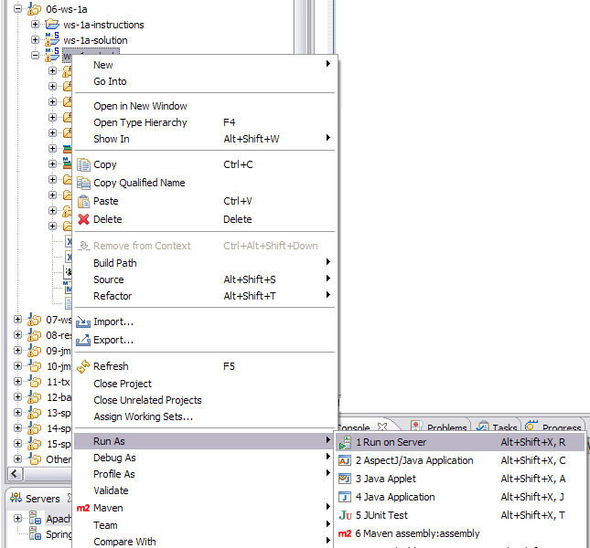

In this lab you will gain experience using Spring WS to expose the rewards application at a SOAP endpoint. You'll create an XSD defining the document to be exchanged across SOAP and then use Spring WS to create an endpoint. Then you will use Spring WS to call that SOAP service from a client application.
What you will learn:
How to use SOAP with a contract-first approach
How to use Spring WS to expose a SOAP endpoint
How to use Spring WS to consume a SOAP endpoint
Specific subjects you will gain experience with:
XML Schema Definition (XSD)
JAXB2
The WebServiceTemplate template class
Estimated time to complete: 45 minutes
If you feel comfortable with the material, you can
work with the TODOs listed in the Tasks view in
Eclipse/STS.
Complete TODO 01 - 04 to generate an XSD and matching Java classes.
Complete TODO 05 to setup the MessageDispatcherServlet.
Complete TODO 06 to process the dining requests and return confirmation responses.
Complete TODO 07 to enable WS annotation-driven programming.
Complete TODO 08 deploying the application to the server. http://localhost:8080/soap-ws/ should now be accessible.
Complete TODO 09 - 11 by implementing a test method.
The instructions for this lab are organized into three sections. In the first section, you'll define the contract that clients will use to communicate with you via SOAP. In the second section you'll export a SOAP endpoint for access. In the third section you'll consume that SOAP service using Spring WS.
When designing SOAP services the important thing to keep in mind is that the SOAP services are meant to be used by disparate platforms. To effectively accomplish this task, it is important that a contract for use of the service is designed in a way that is accessible to all platforms. The typical way to do this is by creating an XML Schema Definition (XSD) of the messages that will be passed between the client and the server. In the following step you will define the message contract for the rewards application you created earlier.
(TODO 01) In the soap-ws project, open the sample-request.xml file from the src/main/webapp/WEB-INF/schemas directory. This is currently a bare-bone sample message which only contains the root element and the desired namespace. Complete the sample message by adding attributes for amount, creditCardNumber and merchantNumber. Fill in some useful values in these attributes, like 100.00 for the amount, and so on.
![[Warning]](images/warning.png) | Warning |
|---|---|
Make sure to use attributes, not subelements, or you'll run into problems later on when you test your code! |
(TODO 02) You now need to infer a contract out of your sample message, in our case an XML Schema (XSD). If you are already experienced with XSDs you could of course also skip the sample message part, and write your schema yourself. But it often saves some time if you start with the sample message and use tools to create a corresponding XSD. You will use Trang in this lab, which is a open source schema converter. You already have a working Run Configuration in Eclipse. Just right-click on the file ws-1 Trang.launch in your project root and select Run As->ws-1 Trang. Trang will create a XSD named trang-schema.xsd in src/main/webapp/WEB-INF/schemas.
![[Tip]](images/tip.png) | Tip |
|---|---|
You need to refresh the project (select the project and press F5) before you see this file. |
Open the file and inspect it (click on the 'Source' tab if the editor opened with the 'Design' tab). Trang should have generated a definition for the element rewardAccountForDiningRequest of type complexType with the 3 attributes in it from the previous step. Trang has also generated the types for the attributes, but you will probably have to tweak them. amount should be of type xs:decimal and the other two of type xs:string, not xs:integer.
When you've finished defining the rewardAccountForDiningRequest element, select the 'Design' tab from the lower left of the editor window and double-click the rewardAccountForDiningRequest element. If you have properly created the XSD, your (rewardAccountForDiningRequestType) will look like Figure 1.

Figure 1: (rewardAccountForDiningRequestType) structure
(TODO 03) We also need a response message, but this has already been created for you. Open the reward-network.xsd file from the src/main/webapp/WEB-INF/schemas directory. You'll see the definition of rewardAccountForDiningResponse. Copy and paste your generated definition of rewardAccountForDiningRequest at the top of this file. Now that you have completed your definition of your contract, move on to the next step.
(TODO 04) In this step we use JAXB2 to convert between Objects and XML. So
the first step is to generate the classes out of your previously
created XML Schema with xjc, the JAXB2 compiler. You will find an Ant
buildfile for this in the root of the project with the name
create-classes.xml. Right click on it and select "Run As/Ant Build".
After refreshing the project (select the project and press F5) you
will see the generated classes in the package
rewards.ws.types.
Open RewardAccountForDiningRequest and see
how the properties and types align with your schema definition.
(TODO 05) Much like Spring MVC, Spring WS uses a single servlet endpoint for the handling of all SOAP calls. Open the web.xml file in the src/main/webapp/WEB-INF directory. Add a new servlet named rewards with a servlet class of org.springframework.ws.transport.http.MessageDispatcherServlet. Next define an initialization parameter for the servlet called contextConfigLocation that has a value that points to the servlet configuration file defined in the same directory.
(TODO 06) Now that the Spring WS infrastructure has been set up, you must create an endpoint to service the RewardNetwork requests. You will use the annotation style mapping in this lab, including the latest annotations introduced in Spring Web-Services 2.0.
Such an endpoint has been started for you already. Open RewardNetworkEndpoint from the reward.ws package. Notice that the class is already annotated with @Endpoint and is autowired with a RewardNetwork service. The missing piece is the method which processes the request. Create a new method: you can choose any name you like, something like reward would make sense. Give it a parameter of type RewardAccountForDiningRequest and use RewardAccountForDiningResponse as the return type. These are your JAXB2 generated classes: they can be automatically converted for you by Spring WS using JAXB2, but you'll have to annotate the parameter with @RequestPayload and the method with @ResponsePayload to indicate that this is necessary!
Now you have to implement the logic inside of the method. As the generated classes are not your domain classes you must convert them to the classes which are used in the service. Create a new Dining object with Dining.createDining(String amount, String creditCardNumber, String merchantNumber). You will get the needed values out of RewardAccountForDiningRequest. Then call the method rewardAccountFor on the rewardNetwork. Finally create a RewardAccountForDiningResponse object and return it.
Complete your endpoint now by mapping the method to the correct request by placing an annotation on the method that uses the payload root's element name.
(TODO 07) Open the rewardNetwork-servlet-config.xml file from the src/main/webapp/WEB-INF directory. This file contains the configuration for Spring Web Services. Notice how component scanning is already enabled: this will ensure that your endpoint class is defined as a Spring bean automatically. You just have to use the new ws: namespace to enable the annotation-driven programming model, which will enable support for all the annotations you've applied in your endpoint class. You don't have to explicitly configure an OXM marshaller for JAXB2, Spring-WS 2.0 enables it automatically when you've added the annotation-driven model. Once you've completed this move on to the next step.
(TODO 08) Now that the SOAP endpoint has been wired properly you must start the web application to export it. Start the web application for this project as shown below.
|  |
Once started, the welcome page (just a static index page at the context root) should be accessible as http://localhost:8080/soap-ws/
At this point you've successfully exported a service to a SOAP endpoint without changing the original class. If you are acting as a provider of services to other clients this would be all that you need to do. But there are many cases where you need to consume SOAP services as well. When doing this, it is important to hide the fact that SOAP is being used from the client.
(TODO 09) Open and run the SoapRewardNetworkTests test class in the rewards.ws.client package of the src/test/java source folder. If you see a green bar, your web service works properly. Notice that the test method testWebServiceWithXml() uses plain XML (in this case DOM) and not the generated classes. As we started by defining the contract, JAXB2 is just an implementation detail and therefore the client doesn't have to use it.
(TODO 10) Whether your test ran OK or not, you've probably noticed that there's not much to see when you run it: the actual content of the SOAP request and response is not available. When writing web services or web services clients, it's nice to see what XML is actually sent from the client to the server and vice versa. Several tools exist to help you with this. One of these tools is built in with Eclipse's Web Tools Plugin (WTP) and is called the TCP/IP Monitor. It is a view that you can add to your perspective. Type Ctrl-3 and enter TCP followed by Enter to add the TCP/IP Monitor view to your perspective. Click the small arrow pointing downwards and choose "properties".
 |
Choose "Add..." to add a new monitor. As local monitoring port, enter 8081 since this port is probably unused. As host name, enter "localhost" and as port enter 8080 since this is the port that Tomcat is running on. Press OK and then press "Start" to start the newly defined monitor.
Now open client-config.xml class and change the port number in the request URL from 8080 to 8081. This ensures that the request will go through our monitor, which will log and forward it to the server. The response will follow the same route back from the server to the client. Run the test again. Now switch to the Monitor view: you should see one request and response passing by. If you change the pulldowns from "Byte" to to "XML", the view will render the messages in a more readable way.
This is an excellent tool to help you to debug your web services. If there was an error when running your test, try to fix it now using the monitor as a tool to see what the actual request and response are holding.
(TODO 11) There is also an empty method called testWebServiceWithJAXB in SoapRewardNetworkTests. This method should do the same as testWebServiceWithXml(), but by using JAXB2 and not DOM. Implement this method now and use your generated JAXB2 classes. The marshalSendAndReceive() from the WebServiceTemplate should be the right one for this. Pass in RewardAccountForDiningRequest and you will get back a RewardAccountForDiningResponse. Use the input data and the assertions from testWebServiceWithXml(). If you see a green bar, you've completed this lab. Congratulations!
(TODO 12) We don't need to write a WSDL ourselves; Spring-WS can generate one for us based on some conventions.
If you have time, refer to the slides to determine the URL where the WSDL is exposed by this lab; enter the URL in a browser and examine the WSDL; note that it contains the schema you created earlier.
(TODO 13) In this section, if you have time, you will see how we can make some simple configuration changes and then just exchange the payload of the SOAP message we have been using so far (omitting the SOAP Envelope).
Take a look at rewardNetwork-servlet-pox-config.xml; you will notice that it imports rewardNetwork-servlet-config.xml and overrides the definition of two beans which are provided by default. To change the server, edit the web.xml file and change the contextConfigLocation for the MessageDispatcherServlet to point to the rewardNetwork-servlet-pox-config.xml file. Redeploy the project (Run As->Run on Server...).
We also need to change the messageFactory on the client side so it, too, will use POX. We do this by adding another property to the WebServiceTemplate defined in client-config.xml (in src/test/resources/rewards/ws/client).
<property name="messageFactory">
<bean class=
"org.springframework.ws.pox.dom.DomPoxMessageFactory"/>
</property>
Again, this overrides the default message factory. Rerun the client through the tcp/ip monitor and notice the content is now simply the payload.